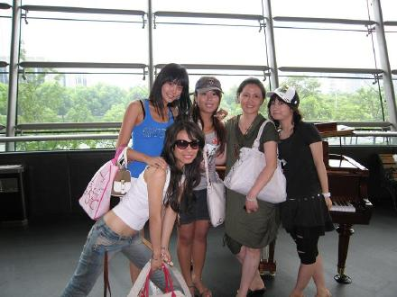
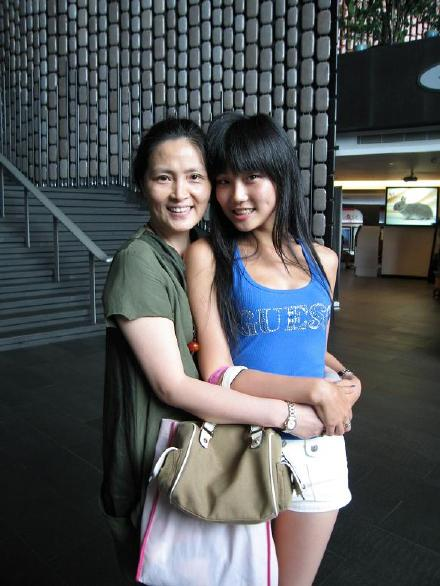
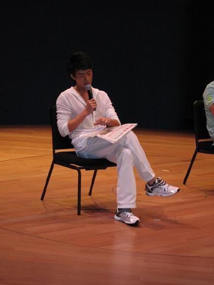

不知道他是什么时候开始和周老师学唱歌的....这是我第一次见到他...让我满感动的....我是三年前就和周老师学了....算起来他应该叫我师姐吧!哈哈哈...
和我们的美丽地周老师多年轻呀...最右边的是可爱地小朱猪...我喜欢她这样的装扮...我旁边的是我的师姐梅梅...当初还是她介绍我跟周老师学的呢...动作最大的我也不要说了...我最好的好朋友郭凌霞小疯子...哈...这里可都是唱歌高手噢...哈...川川面子可真大...那么多师姐给他捧场...不过他真的表现很好噢...

我爱周老师,周老师也爱我...像不像母女呀....

MY
BESTFRIEND郭郭...虽然她现在念书...我在忙着做宣传...我们很少碰头...可我们的感情还是那么深...我和她认识也3年多了...
小梅梅真是大好人...
看川川认真的样子...
